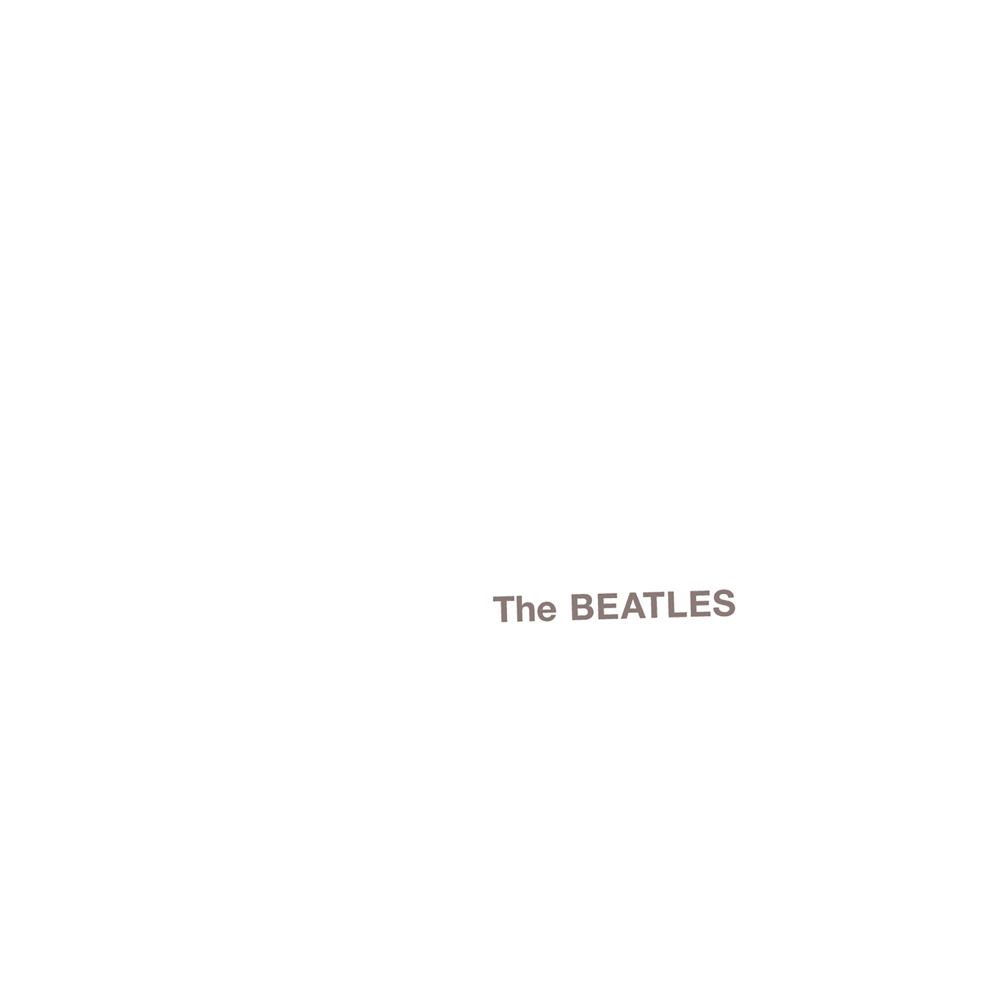

Day 52

Beatles - Happiness Is A Warm Gun - The Beatles - 1968
我不太明白歌词的意思，也不明白歌词和我的心情有什么重合，但昨晚的我莫名觉得这首歌很符合自己的心情。“Happiness Is A Warm Gun”，真神奇，John Lennon和我没有任何共同点，没有相似的成长环境、人生历程。他写歌词时想到的含义、他当时的心情一定和我大相径庭，但是他1968年演奏的歌词和曲调能却能和昨晚的我产生极大共鸣。
She's not a girl who misses much
Do do do do do do do do, oh yeah
She's well acquainted with the touch of the velvet hand
Like a lizard on a window pane
The man in the crowd with the multicoloured mirrors
On his hobnail boots
Lying with his eyes while his hands are busy
Working overtime
A soap impression of his wife which he ate
And donated to the National Trust
Down
I need a fix 'cause I'm going down
Down to the bits that I left uptown
I need a fix 'cause I'm going down
Mother Superior jump the gun
Mother Superior jump the gun
Mother Superior jump the gun
Mother Superior jump the gun
Mother Superior jump the gun
Mother Superior jump the gun
Happiness is a warm gun (Happiness bang, bang, shoot, shoot)
Happiness is a warm gun, mama (Happiness bang, bang, shoot, shoot)
When I hold you in my arms (Oo-oo oh yeah)
And I feel my finger on your trigger (Oo-oo oh yeah)
I know nobody can do me no harm (Oo-oo oh yeah)
Because happiness is a warm gun, mama (Happiness bang, bang, shoot, shoot)
Happiness is a warm gun, yes it is (Happiness bang, bang, shoot, shoot)
Happiness is a warm, yes it is, gun (Happiness bang, bang, shoot, shoot)
Well, don't you know that happiness is a warm gun, mama? (Happiness is a warm gun, yeah)